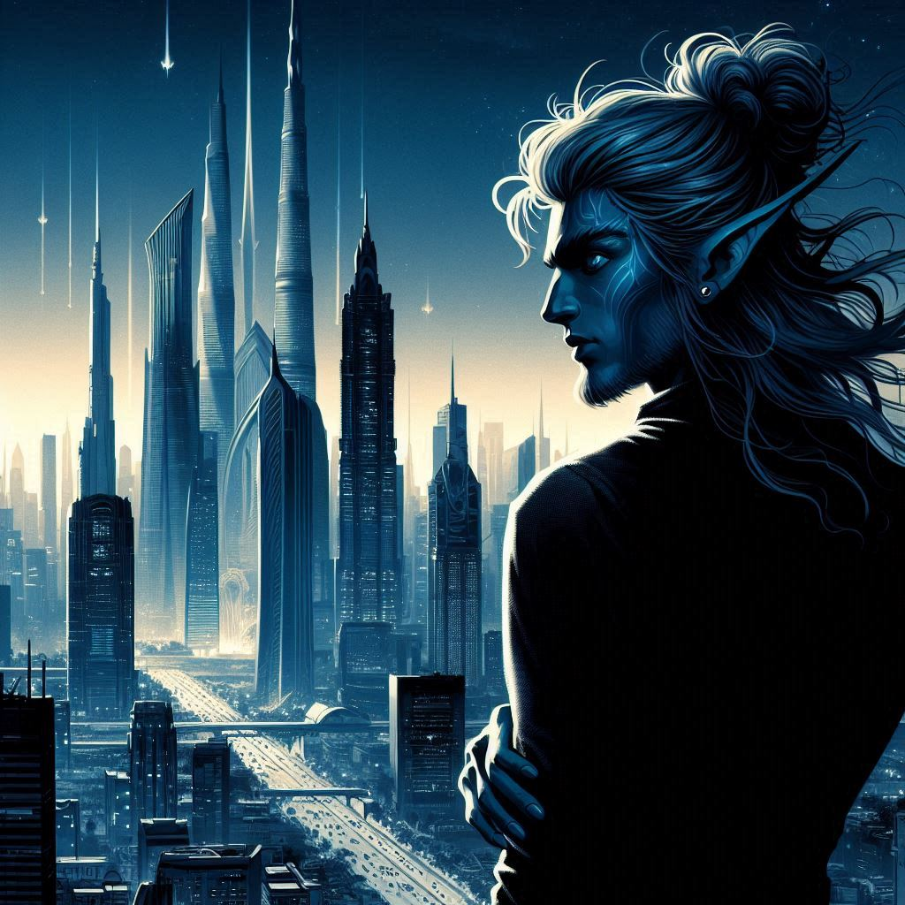
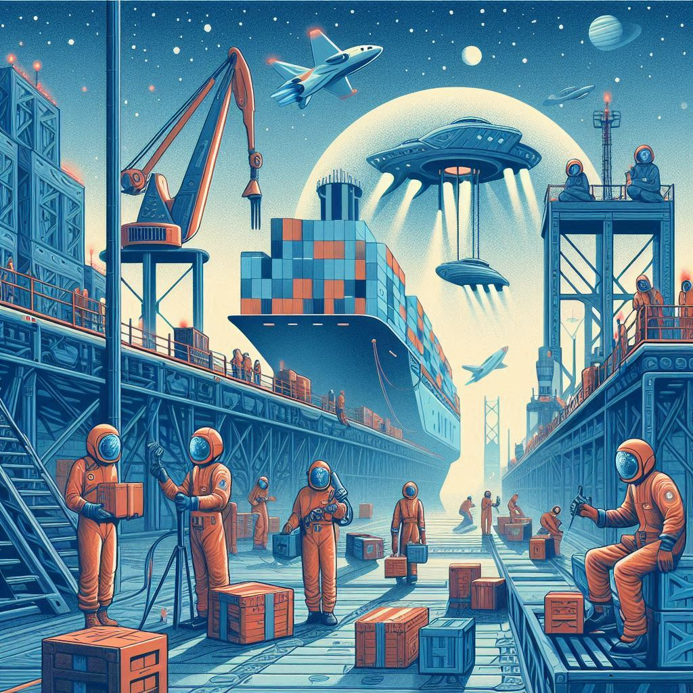
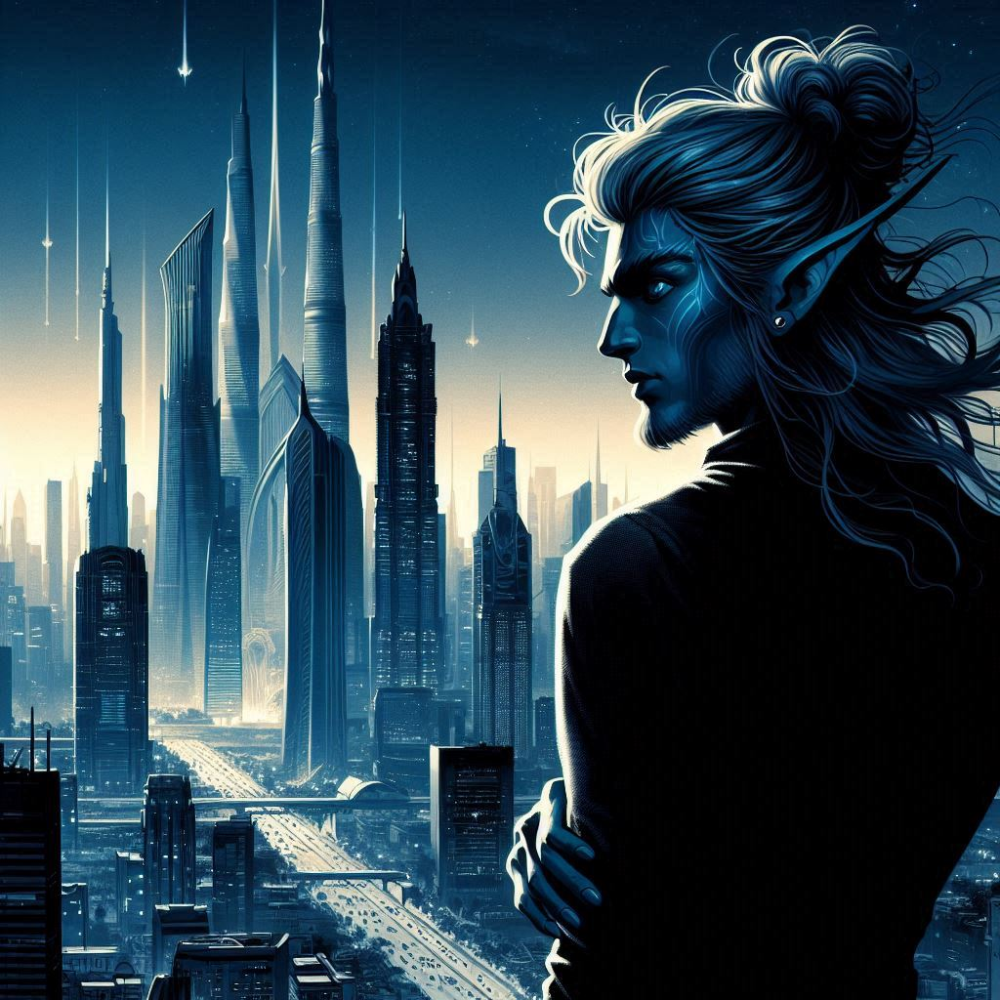
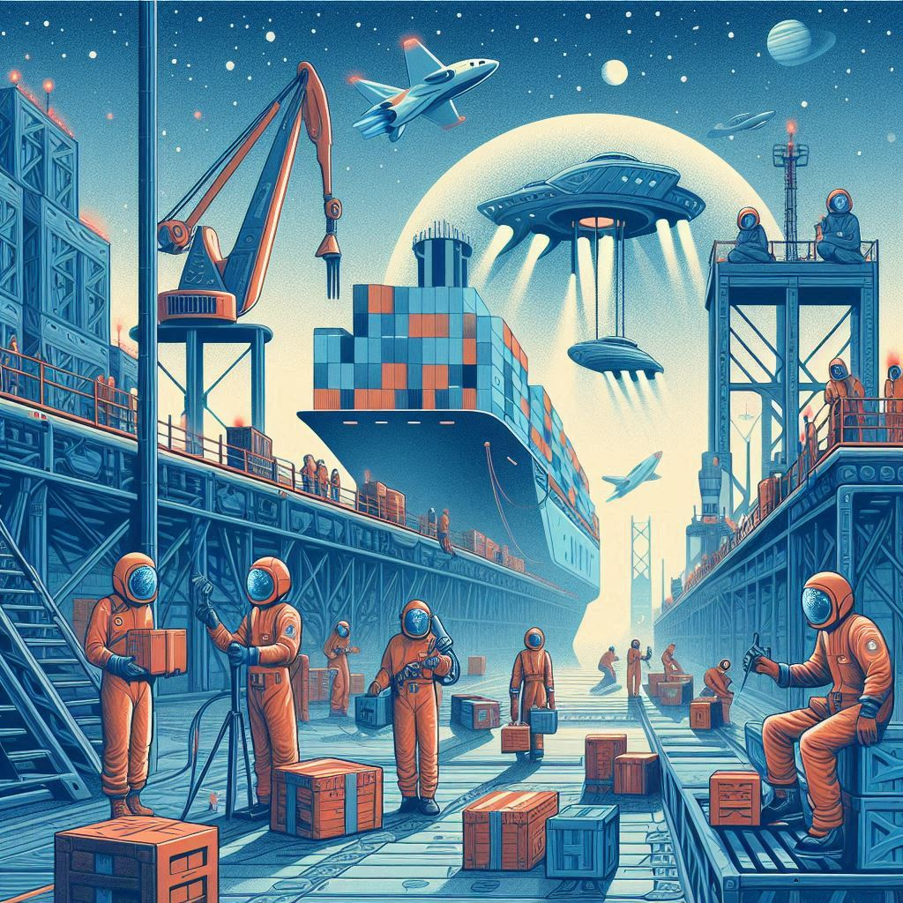

Designation: Sanctuary 23
Classification: Protected Human Colony
Security Level: 4
Overseer: J'Nepa
Overview
Sanctuary 23 serves as one of the few officially recognized Human Preservation colonies remaining under Imperial
regulation. The planet was designated as a sanctuary following the near-eradication of baseline humanity during
the early expansion wars. Oversight of the world is nominally assigned to Imperial Biocultural Preservation
Command, though in practice, management falls to J'Nepa, a Flyu custodian tasked with monitoring and
maintaining cultural continuity among surviving human populations.
Planetary Data
Primary Star: 1 (G-type)Moons: 2 (Synchronous orbit, locally referred to as Eir and Danu)
Rotation Period: 365 local days
Climate: Earth-like; moderate seasonal variation and stable weather systems
Atmosphere: Oxygen-nitrogen mix; breathable, near-identical to historical Earth composition
Topography: Lush terrestrial biomes featuring temperate forests, rolling plains, and freshwater networks. Minimal industrial presence.
Known Inhabitants
Population is composed almost exclusively of human descendants maintaining distinct cultural enclaves. Among the oldest and most traditional of these settlements is New Belfast, founded by an Irish clan that preserved a surprising degree of Old Earth heritage, including language, folklore, and rural craftsmanship. The O'Riley family is among its most prominent lineages. Other human communities exist across the planet, but contact between settlements is limited, fostering regional autonomy and strong local identities.Imperial Status
Designated Restricted Access Zone. Entry by Flyu personnel or Enforcer units is prohibited without High Command authorization. The planet is under Imperial observation but functions with near-total autonomy. HLA vessels occasionally visit for humanitarian and logistical purposes; their presence is tolerated but not officially sanctioned.Addendum
Orbital records confirm that J'Nepa's starship, the Serenvale, maintains a constant stationary orbit above the northern hemisphere. Communications logs indicate frequent unreported descents to the planet's surface. Imperial review boards have noted “concerns regarding personal attachment to human subjects” but have not enforced disciplinary action, citing “unique custodial effectiveness.”Addendum 2
Unofficial reports suggest the local human population refers to J'Nepa as a “guardian spirit.” It is rumored J'Nepa maintains personal involvement with several villages, particularly New Belfast, despite Imperial policy forbidding direct interference. Imperial Enforcement has yet to act on any provided reports.
Security Level Key:
1 - Low Risk: Minimal threat, safe for civilian travel.
2 - Moderate Risk: Some hazards present, caution advised.
3 - High Risk: Significant dangers, restricted access.
4 - Extreme Risk: Severe threats, no unauthorized access permitted.
5 - Critical Risk: Maximum threat level, immediate evacuation required.